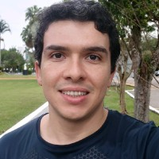

Universidade Estadual de Maringá
Graduação em Ciência da Computação (2007 - 2012)
Mestrado em Ciência da Computação (2013 - 2015)
Instituto Federal de Santa Catarina (IFSC)
Especialização em Docência para a Educação Profissional (2020 – atual)

Romulo Beninca é professor do Instituto Federal de Santa Catarina (IFSC), campus Gaspar, e mestre em Ciência da Computação pela Universidade Estadual de Maringá. Possui experiência na área de desenvolvimento de software, automação, administração de servidores e análise de sistemas. Iniciou sua carreira docente durante a graduação e, desde 2015, atua no IFSC, tendo lecionado nos cursos Técnico em Informática e Superior em Análise e Desenvolvimento de Sistemas. Atualmente, trabalha com disciplinas de Programação para Internet e Desenvolvimento Mobile, além de participar de projetos de pesquisa envolvendo automação, arquitetura de computadores, impressão 3D e lançamento de foguetes de baixa altitude.
Aguentar o I6
Graduação em Ciência da Computação (2007 - 2012)
Mestrado em Ciência da Computação (2013 - 2015)
Especialização em Docência para a Educação Profissional (2020 – atual)
IFSC - Professor
Atua desde 2015 no Instituto Federal de Santa Catarina.
PST - Desenvolvedor
Atuou como analista no Programa Segundo Tempo(PST) do ministério do esporte, no qual participou do desenvolvimento de 12 sistemas de informação.
| Horário | Quarta | Sexta |
|---|---|---|
| 07:20 | Programação para Internet | ------------------------------------------------ |
| 10:25 | Programação para Internet | Programação para Dispositivos Móveis |
E-mail: rbeninca@gmail.com
Telefone: +55 (44)98801-0521
Instagram: @rbeninca